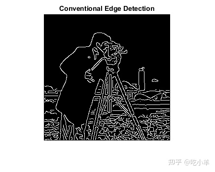
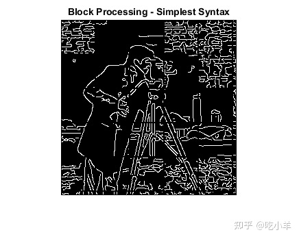
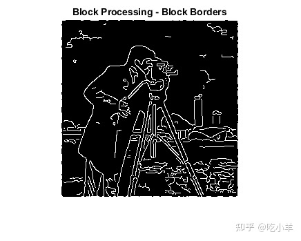
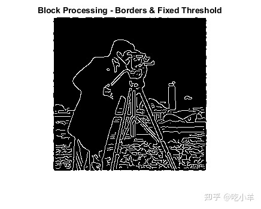

Home
本示例说明如何通过将图像划分为块来对 TIFF 图像执行边缘检测。在处理大图像时，正常的图像处理技术有时会失效。图像可能太大而无法加载到内存中，或者它们可以加载到内存中但太大而无法处理。
为了避免这些问题，您可以增量处理大图像：读取、处理，最后将结果写回磁盘，一次一个区域。blockproc函数可帮助您完成此过程。首先可以使用blockproc指定图像、块大小和函数句柄；然后blockproc将输入图像分成指定大小的块，使用函数句柄一次一个块地处理它们，然后将结果组合成输出图像。blockproc将输出返回到内存或磁盘上的新文件。
首先，考虑在没有块处理的情况下执行边缘检测的结果。此示例使用小图像 cameraman.tif 来说明概念，但块处理通常对大图像更有用。
file_name = 'cameraman.tif';
I = imread(file_name);
normal_edges = edge(I,'canny');
imshow(I)
title('Original Image')
imshow(normal_edges)
title('Conventional Edge Detection')

现在尝试使用块处理完成相同的任务。blockproc函数内置了对 TIFF 图像的支持，因此不必使用imread. 相反，使用字符串文件名作为输入调用该函数。 blockproc一次读取一个块，使此工作流程非常适合非常大的图像。
处理大图像时，您通常会使用“Destination”参数来指定blockproc将输出图像写入的文件。但是，在此示例中，您将结果返回到内存中的变量。
此示例使用 [50 50] 的块大小。一般来说，选择更大的块大小blockproc会产生更好的性能——对于访问磁盘会导致显著性能成本的文件到文件工作流尤其如此。适当的块大小因可用的机器资源而异，但应该在每个维度上以千计像素的范围内。
% You can use an anonymous function to define the function handle. The
% function is passed a structure as input, a "block struct", with several
% fields containing the block data as well as other relevant information.
% The function should return the processed block data.
edgeFun = @(block_struct) edge(block_struct.data,'canny');
block_size = [50 50];
block_edges = blockproc(file_name,block_size,edgeFun);
imshow(block_edges)
title('Block Processing - Simplest Syntax')

注意块处理中的重要瑕疵。确定一个像素是否是边缘像素以需要来自相邻像素的信息。这意味着不能将每个块与其周围的像素完全分开处理。要解决此问题，请使用blockproc参数“BorderSize”来指定每个块周围的垂直和水平边界。必要的“BorderSize”因正在执行的任务而异。
border_size = [10 10];
block_edges = blockproc(file_name,block_size,edgeFun,'BorderSize',border_size);
imshow(block_edges)
title('Block Processing - Block Borders')

现在正在处理这些块，每边增加 10 个像素的图像数据。这看起来更好，但结果仍然与原始内存中的结果显着不同。这样做的原因是 Canny 边缘检测器使用基于完整图像直方图计算的阈值。由于blockproc函数为每个块调用edge函数，因此 Canny 算法正在处理不完整的直方图，因此在整个图像中使用不同的阈值。
在块处理图像时，了解这些类型的算法约束很重要。某些函数不会直接转换为块处理的语法。在这种情况下，edge函数允许您将固定阈值作为输入参数传入，而不是计算它。修改您的函数句柄以使用edge的三参数语法，从而删除函数的“全局”约束之一。经过一些试验和错误，我们发现 0.09 的阈值（就当前的图片而言）给出了很好的结果。
thresh = 0.09;
edgeFun = @(block_struct) edge(block_struct.data,'canny',thresh);
block_edges = blockproc(file_name,block_size,edgeFun,'BorderSize',border_size);
imshow(block_edges)
title('Block Processing - Borders & Fixed Threshold')

结果现在与原始内存中的结果非常匹配。您可以沿着边界看到一些额外的瑕疵。这是由于 Canny 边缘检测器使用的填充方法不同。目前，blockproc仅支持沿图像边界的零填充方式。
======================================================================
我的测试结果及程序
下面是我测试的代码：

注：本文根据MATLAB官网内容修改而成。